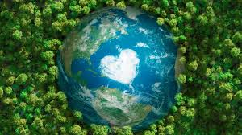
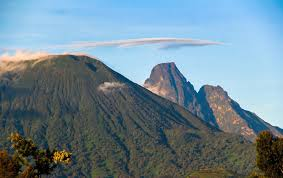
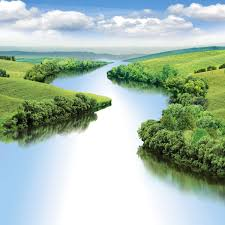
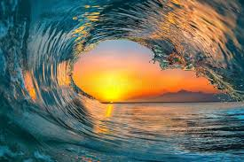
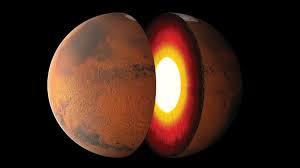
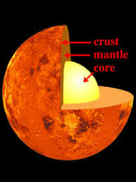
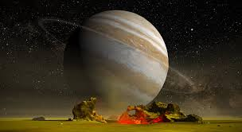
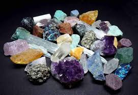

Earth
Supports life: yes. Earth has breathable air (21% O2), abundant water, diverse ecosystems, global magnetic field, and stable climate.
Moons: 1 (Moon). Plays a role in tides and stabilizes axial tilt.
Learn how Earth, Sun, Moon, atmosphere, water, forests and life formed and evolved.
The Earth formed about 4.54 billion years ago from a giant molecular cloud in the Milky Way galaxy. Gravity pulled dust and gas into a spinning disk, and over time particles stuck together (accretion) to create planetesimals and then protoplanets.
Earth has 3 main layers:
Earth is divided into four hemispheres for geographical and navigational purposes:
This division helps in mapping, time zones, climate studies, and understanding global patterns. It's not a physical division but a human construct based on latitude (equator) and longitude (Prime Meridian). Alternatively, Earth is sometimes divided into four spheres: lithosphere (solid Earth), hydrosphere (water), atmosphere (air), and biosphere (life), representing its interconnected systems.
Earth's gravity is crucial because it holds the planet together, keeps the atmosphere from escaping, enables life-supporting processes, and shapes geology, weather, and ecosystems. Without gravity, Earth would disintegrate, with materials floating away, no stable surface for life, and no tides or orbits.
Earth has gravity because of its mass (~5.972 × 10²⁴ kg), following Newton's law of universal gravitation: F = G × (M × m) / r², where G is the gravitational constant (6.67430 × 10⁻¹¹ m³ kg⁻¹ s⁻²), M is Earth's mass, m is another object's mass, and r is the distance. Gravity is the curvature of spacetime caused by mass, per Einstein's general relativity.
Details and Components:
Gravity is fundamental to Earth's stability, making it habitable and distinct from airless bodies like asteroids.
Volcanic eruptions occur due to tectonic plate movements, where plates collide, separate, or slide past each other. Magma from the mantle rises through cracks in the crust, building pressure until it erupts. Other causes include hotspots (fixed magma plumes beneath the crust, like under Hawaii) and subduction (one plate sinking under another, melting rock and creating magma). Volcanoes are classified as shield (gentle slopes from fluid lava), stratovolcanoes (steep, explosive from viscous magma), or cinder cones (small, from ash and cinders). Eruptions can be effusive (lava flows) or explosive (ash and gas).

Negative effects include lava flows destroying land and infrastructure, ash clouds blocking sunlight leading to crop failures and respiratory issues, pyroclastic flows (hot gas and ash) killing instantly within miles, lahars (mudflows) burying areas, and earthquakes triggering landslides. Long-term effects: climate cooling from sulfur dioxide (SO2) aerosols reducing temperatures, acid rain damaging ecosystems, tsunamis if underwater volcanoes collapse, and health issues from toxic gases like carbon dioxide (CO2) and hydrogen sulfide (H2S). Historical examples include Mount Vesuvius burying Pompeii in 79 AD and Krakatoa in 1883 causing global cooling.
Volcanoes create fertile soil from volcanic ash, rich in minerals like potassium and phosphorus, boosting agriculture in regions like Hawaii and Italy. Geothermal energy from hot underground water provides clean, renewable power, used in Iceland and New Zealand. Tourism attracts visitors to sites like Yellowstone or Mount Fuji, boosting local economies. Minerals such as sulfur, copper, and gold are extracted from volcanic rocks. They shape diverse landscapes, inspiring art, literature, and scientific research, and contribute to biodiversity in isolated islands formed by eruptions.
Monitoring includes seismographs detecting earthquakes from magma movement, GPS measuring ground swelling or tilting, gas sensors detecting increased sulfur dioxide (SO2) and carbon dioxide (CO2) emissions, thermal cameras spotting heat anomalies, and satellite imagery observing deformation or thermal hotspots. Volcano observatories, like those run by USGS or similar agencies, analyze data and issue alerts on a scale from green (normal) to red (eruption imminent). Historical precursors include increased seismic activity, ground deformation, and gas emissions, allowing evacuations and preparations.
Mountains form through tectonic forces: convergent plates colliding cause folding and faulting, creating ranges like the Himalayas (India-Asia collision) and Andes. Divergent plates pulling apart form rift valleys, potentially leading to new mountains. Hotspots create volcanic mountains like the Hawaiian Islands. Erosion and weathering by wind, water, and ice sculpt peaks, valleys, and slopes over millions of years. Types include fold mountains (compressed layers), fault-block mountains (uplifted blocks), and dome mountains (magma pushing up). They influence climate, creating rain shadows and biodiversity hotspots.

Lakes form from glaciers carving U-shaped valleys and leaving behind basins filled with meltwater, common in alpine regions. Tectonic activity creates depressions through faulting or folding, like the Great Rift Valley lakes in Africa. Volcanic craters (maar lakes) or calderas fill with water after eruptions. River meanders can isolate loops, forming oxbow lakes. Human-made dams impound rivers for reservoirs. Lakes fill via precipitation, rivers, groundwater, or springs, and vary in size from small ponds to vast seas like the Caspian. They support ecosystems, water supply, and recreation but can dry up or become polluted.

Rivers start as headwaters from precipitation collecting in highlands, snowmelt in mountains, or springs from aquifers. Water flows downhill due to gravity, eroding channels through mechanical weathering and chemical dissolution. Tributaries join, forming drainage basins or watersheds. Rivers shape landscapes via erosion (cutting valleys, canyons like the Grand Canyon) and deposition (building deltas at mouths, like the Mississippi). Stages include youthful (steep, fast), mature (wide valleys), and old (meandering, slow). They transport sediment, nutrients, and support life, but human activities like damming alter flows and ecosystems.

Oceans formed from water vapor released by volcanic outgassing and comets/asteroids impacting early Earth, condensing into rain that filled basins. Tectonic plates created ocean basins through seafloor spreading at mid-ocean ridges, where magma rises and cools into new crust. Subduction zones recycle old crust back into the mantle. Continental drift, driven by plate tectonics, separated supercontinents like Pangaea, shaping modern oceans: Atlantic from rifting, Pacific from subduction. Oceans cover 71% of Earth, regulate climate, host biodiversity, and influence weather through evaporation and currents.

Earth rotates on its axis once per ~24 hours (day/night) and revolves around the Sun once per ~365.25 days (year).
Movement effects:
Our solar system formed from the same interstellar cloud that created the Sun. As the solar nebula contracted, it spun faster, creating a flat disk where planets formed from clumps of dust and ice.
Earth is the third planet; Mercury, Venus, Mars are closest neighbors.
The list below shows each planet, its average distance from the Sun, and the galaxy they reside in.
| Planet | Average Distance from Sun (million km) | Galaxy |
|---|---|---|
| Mercury | 57.9 | Milky Way |
| Venus | 108.2 | Milky Way |
| Earth | 149.6 | Milky Way |
| Mars | 227.9 | Milky Way |
| Jupiter | 778.5 | Milky Way |
| Saturn | 1,433.5 | Milky Way |
| Uranus | 2,872.5 | Milky Way |
| Neptune | 4,495.1 | Milky Way |
Within our Solar System, Earth is the only confirmed planet supporting life. The key habitability factors include liquid water, an atmosphere, stable temperature, magnetic field, and nutrients.

Supports life: yes. Earth has breathable air (21% O2), abundant water, diverse ecosystems, global magnetic field, and stable climate.
Moons: 1 (Moon). Plays a role in tides and stabilizes axial tilt.

Supports life: potential (extremophiles) under subsurface ice. Very thin CO2 atmosphere, low temperature, radiation exposure.
Moons: Phobos, Deimos.

Supports life: extreme (surface ~460°C, thick acidic clouds), but high-altitude habitable zone may be possible for aerial microbes.
Moons: none.

Supports life: not on gas surface, but moons like Europa and Ganymede are promising for subsurface oceans.
Moons: 95+ (including Io, Europa, Ganymede, Callisto).
Other planets lack the right conditions for life as we know it:
Aliens could be millions of years older, allowing advanced evolution in science and tech. They might use:
While no alien life is confirmed, scientists search with:
Speculatively, aliens could inhabit:
Area 51 is a highly classified U.S. Air Force base in Nevada, known for testing advanced aircraft like the U-2 and stealth planes. Conspiracy theories claim it hides crashed UFOs and alien bodies, fueled by declassified documents and witness accounts. However, official explanations attribute sightings to secret military tech, not extraterrestrials. It's a symbol of government secrecy, but no evidence supports alien involvement—it's more about human innovation and myths!
Potential alien environments: subsurface ocean on Europa, methane lakes on Titan, high clouds of Venus, and Mars underground.
Possible tech forms: bioengineered microbes, electromagnetic communication, and energy use via stellar, geothermal, or fusion systems.
The Moon likely formed after a giant impact between Earth and a Mars-sized body (Theia), ejecting debris that coalesced into the Moon.
The Sun is a G-type main sequence star (4.6 billion years old) that uses nuclear fusion (4H → He + energy) to produce light and heat.
The Moon influences Earth's tides and night sky. It is Earth's only natural satellite, orbits every 27.3 days, and always shows the same face due to synchronous rotation.
Stars are massive spheres of plasma that produce light and heat by nuclear fusion. Our nearest star, the Sun, supports life, while other stars are visible at night as points of light from vast distances.
Water on Earth circulates in the hydrologic cycle:
Oceans hold ~97% of Earth's water; glaciers/lakes/rivers hold fresh water.
Several planets in our Solar System experience forms of precipitation, though not always water rain:
Wind is air moving from high to low pressure. Uneven solar heating leads to pressure differences. Earth's rotation causes deflection, creating trade winds, westerlies, and polar easterlies.
Wind direction is affected by local geography and the Coriolis effect.
Forests grow where sunlight, water, and nutrients support plant life. Trees convert carbon dioxide and water into oxygen and sugar via photosynthesis.
Sunlight warms Earth. Atmosphere traps heat through greenhouse gases (CO2, H2O, CH4); this keeps conditions suitable for life.
Without light:
The Sun is the primary energy source for life on Earth:
Humans harness solar energy through:
Free oxygen began rising ~2.4 billion years ago (Great Oxidation Event) due to cyanobacteria. Current atmosphere is ~21% oxygen.
Oxygen is essential for respiration in animals and humans.
Earth has more than 4,500 known mineral species, with over 5,600 possible species recorded when including rare and synthetic phases. Minerals are crystalline solids formed by geological processes and are the building blocks of rocks.

Plants need essential minerals from soil for healthy growth:
Plants are vital for human survival and well-being:
Earth orbits the Sun in an elliptical path at ~30 km/s and completes 365.25 days. Leap years fix the extra quarter day.
Evidence of orbit:
Protecting Earth means reducing our impact and restoring ecosystems. Small daily changes add up to global benefits.
Every community can take action through education, climate policy, and shared responsibility.
Explore these pages: Education Donation, AI & Film Learning, and other EduHub modules.